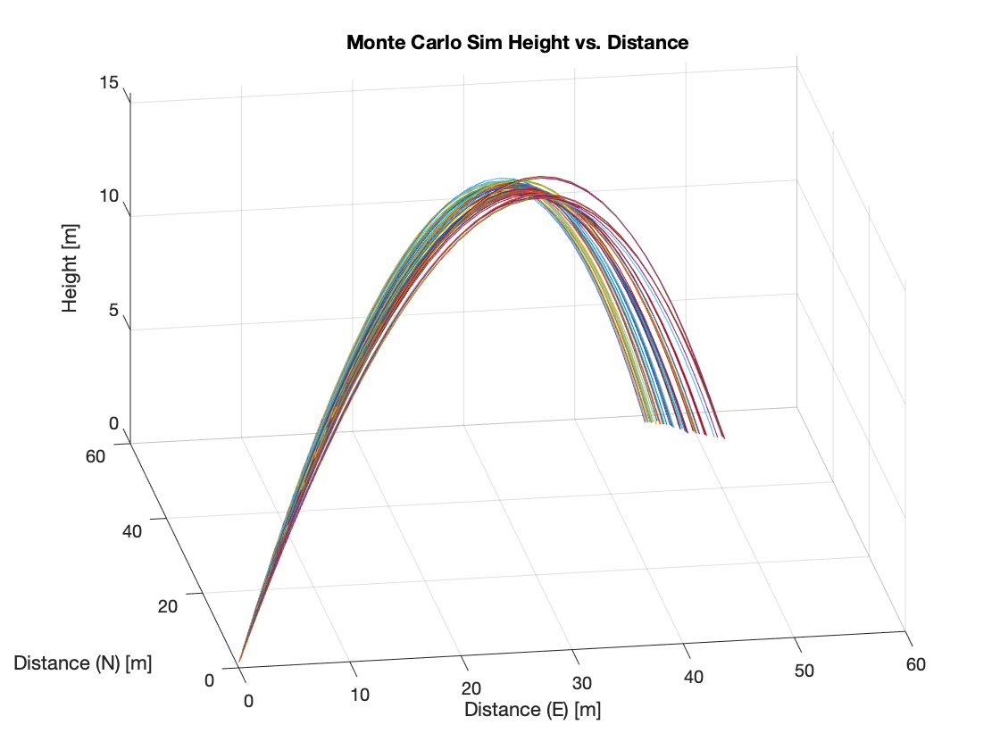
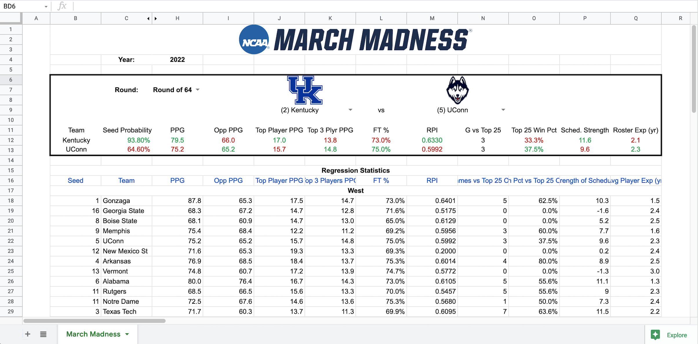
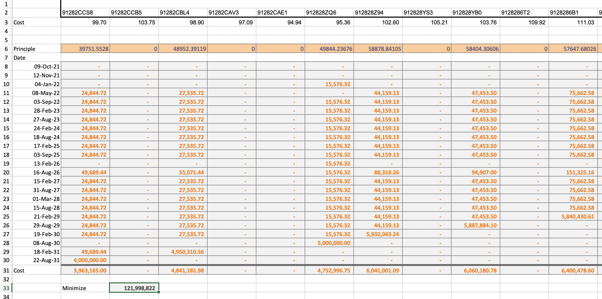
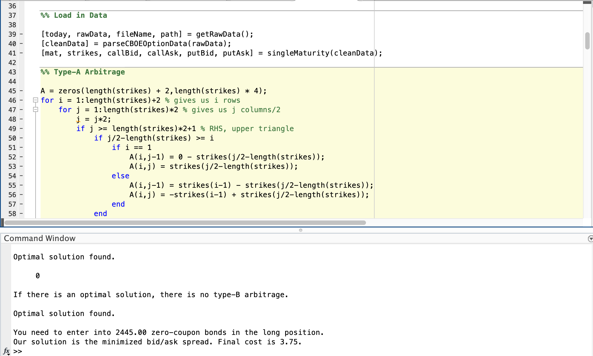
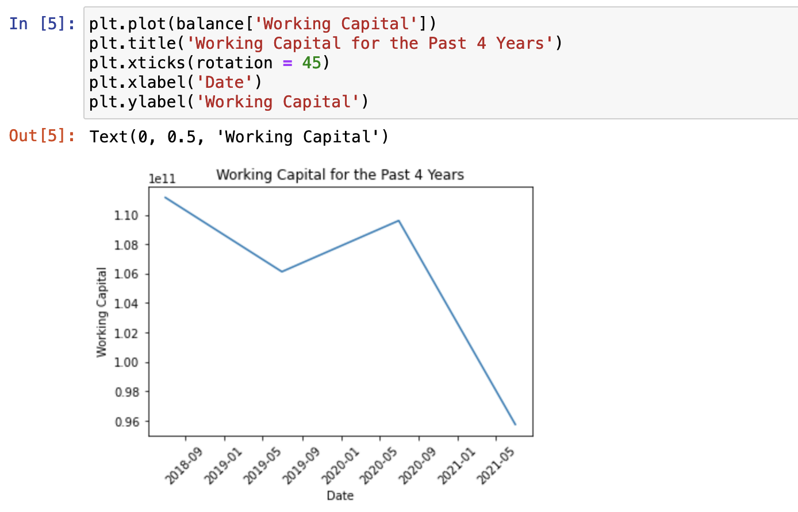
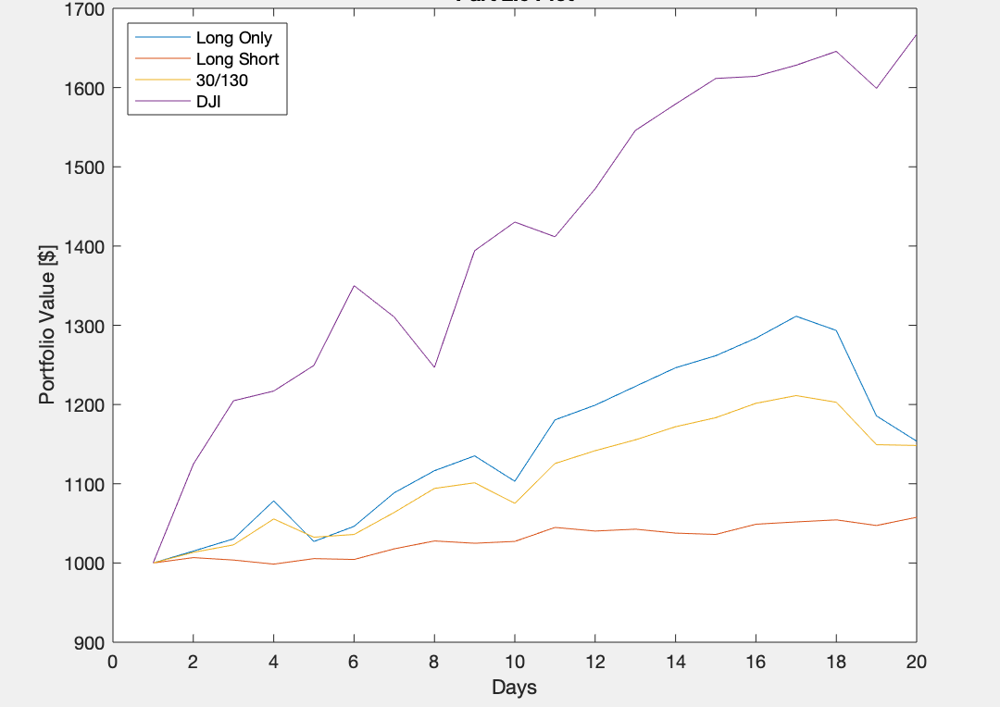

Aerospace Engineering Project
In this AIAA paper, I develop two bottle rocket launch models derived from aerodynamic and thermodynamic principles in MATLAB. The first model is 2-dimensional with varying parameters in order to analyze their effects on rocket trajectory and thrust. The second model is 3-dimensional, to account for external forces acting on the rocket, with a Monte Carlo simulation to reflect uncertainties in initial data. Paper and code provided in the appendix.


I made this Google Sheets project to compare the metrics of every March Madness team and collaborate with friends to accurately predict matchups by webscraping various websites. Code has been removed and added in notes in case website html's change and to prevent slow loading due to the large number of requests. Next steps include conference matchup history and regression to identify importance of each factor.

This Excel project focuses on linear and quadratic programming methods, such as the Simplex method, in order to find the ideal stock and bond portfolio given the initial parameters.

The purpose of this project was to utilize MATLAB's linprog function in order to find the optimal solution to the linear programming problem, thus proving whether or not there is an arbitrage opportunity in the set of derivative securities.

The goal of this Python project was to analyze financial statements through Yahoo Finance in order to better interpret and compare metrics between companies varying in size, industry, etc. in an effecient way.

This MATLAB project was made to analyze various strategies surrounding the Dow Jones index through linear algebra, comparing results from sample covariance vs. single-factor covariance, and long-only vs. long-short vs. 30/130 investing.
The objective of this freelance job was to create a program that can create random fake reviews for a startup's product, given a set of adjectives and positive descriptors.